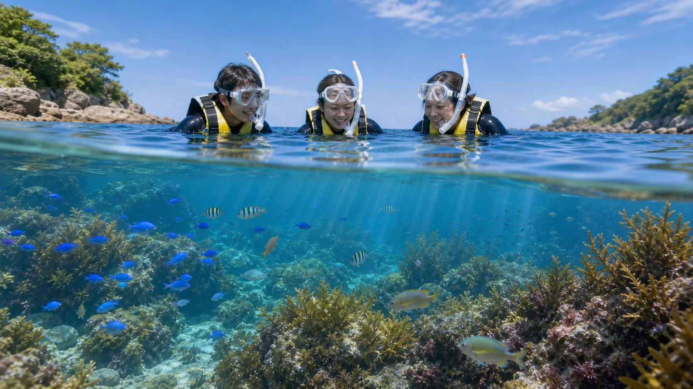
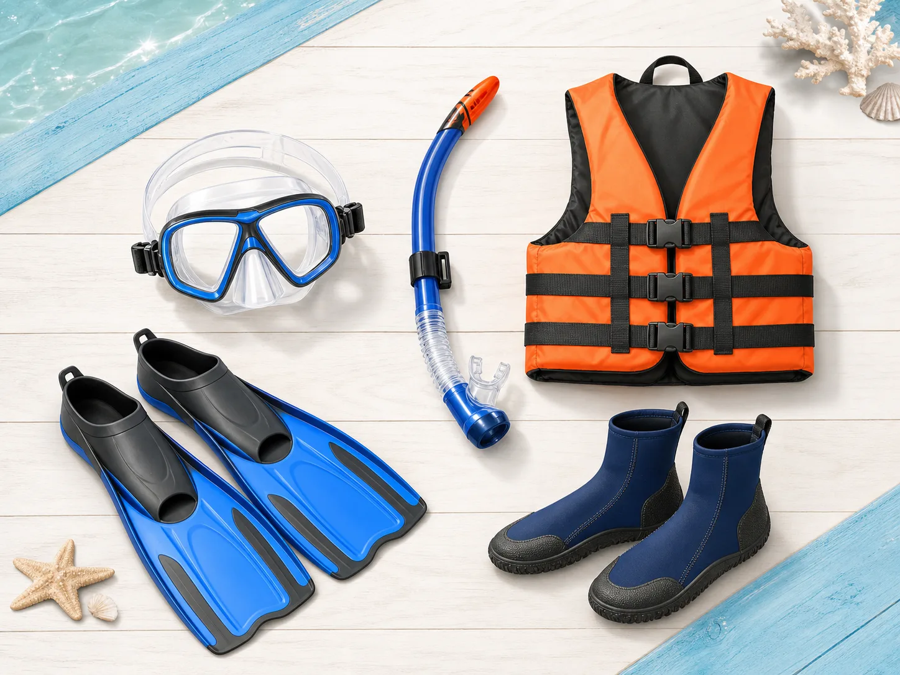
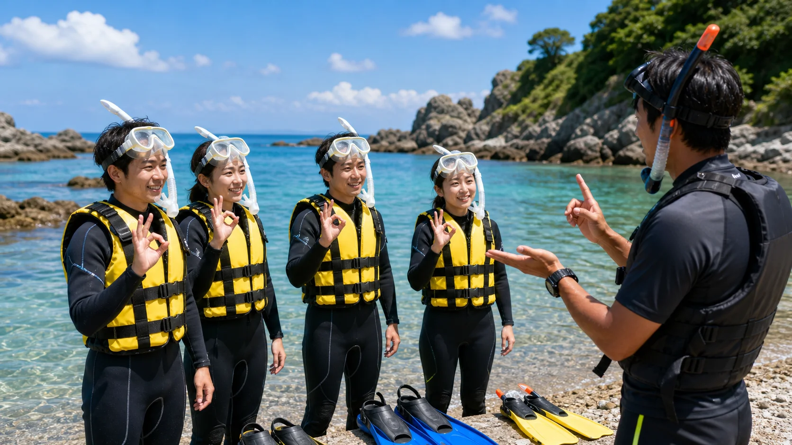
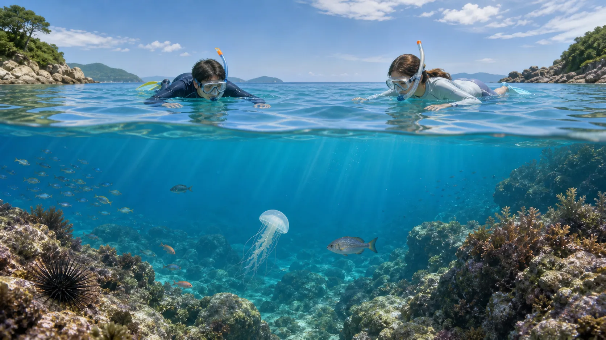

WHY SNORKELING
多くの人が夢中になるのは、海の中をすぐ近くに感じられるから。
スノーケリングは、深く潜る競技ではありません。浮力を使って楽に浮き、呼吸を整えながら、浅い海の生き物や地形を観察する活動です。
泳ぎの速さより、見つける楽しさ。
スノーケリングの魅力は、特別な技術がなくても海の世界をのぞけることです。水面に浮きながら、魚の動き、岩場のすき間、海藻の揺れをゆっくり観察できます。
ただし「簡単にできる」ことと「何も知らなくて安全」は別です。波、流れ、疲れ、器材のずれは事故につながることがあります。プロから最初にレクチャーを受けると、楽しむ余裕がぐっと増えます。
目の前に生き物が現れる
魚の群れ、ウミウシ、カニ、海藻、岩場のすき間。水面からでも、海の中は想像以上に情報量があります。
観察
発見
浮いているだけで気持ちいい
ライフジャケットを着て、体を預けると、波に合わせてゆっくり揺れます。力を抜くほど楽になります。
浮力
リラックス
仲間と同じ海を見る
ひとりで遠くへ行くより、近くの人と発見を共有するほうが安全で楽しい活動です。バディ意識が基本です。
バディ
共有
安全のコツで楽しさが増える
マスクに水が入った時、疲れた時、流れを感じた時の対応を知っているだけで、落ち着いて海を楽しめます。
レクチャー
安心
EQUIPMENT
器材は「よく見える」「楽に進む」「浮ける」ための道具。
器材はかっこよさよりも、サイズが合っていることが大切です。違和感があるときは、海に入る前に必ずインストラクターへ伝えてください。

主なレンタル器材
当日は器材の名前、付け方、外れたときの直し方も水に入る前に確認します。
マスク水中を見るための窓。髪の毛が挟まると水が入りやすくなります。
スノーケル顔を水につけたまま呼吸するための管。口でゆっくり吸って吐きます。
フィン少ない力で進むための足ひれ。膝を大きく曲げず、ゆっくり蹴ります。
ブーツ岩場やフィンずれから足を守ります。砂や小石が入ったら無理せず直します。
ライフジャケット水面で浮くための重要装備。きつすぎず、ゆるすぎず、必ず正しく着ます。
HOW TO ENJOY
正しい楽しみ方は、ゆっくり、近くで、よく見ること。
スノーケリングで疲れる人は、たいてい力みすぎています。速く泳がず、呼吸と浮力を味方にしましょう。

先に習うと、海の中で慌てにくい。
器材の直し方、バディとの距離、困った時の合図を先に知っておくと、海に入ってからの不安が減ります。難しい活動ではありませんが、自然の中で行うからこそ、最初の確認が大切です。
陸上で器材と合図を確認
マスクの付け方、スノーケルのくわえ方、フィンの履き方、困ったときの合図を練習します。
浅いところで呼吸に慣れる
顔をつけて、口呼吸をゆっくり確認。水が入っても慌てず顔を上げれば大丈夫です。
バディと近い距離で移動
ひとりで先に行かず、バディの近くで泳ぎます。移動したい時は、バディと一緒に動きましょう。疲れる前に休むのが上手な楽しみ方です。
観察は静かに、距離を保って
生き物を追いかけると逃げます。止まって見ていると、向こうから自然な姿を見せてくれます。
RISK AWARENESS
危険を知っている人ほど、海を楽しめる。
海はプールと違い、波、風、流れ、水温、生き物、岩場が変化します。怖がるためではなく、落ち着いて行動するために確認します。
波波・うねり
顔に水がかかりやすく、岩場では体が寄せられます。無理に進まず、顔を上げて合図します。
流流れ
気づかないうちに移動することがあります。目印と仲間の位置をこまめに確認します。
疲疲労・冷え
泳ぎ続けると体力を使います。寒い、息が上がる、足がつる前に休憩を伝えます。
岩岩・浅瀬
立とうとして足を切る、ウニを踏むことがあります。浅い場所ではフィンを下げすぎません。
具器材トラブル
マスクに水が入る、スノーケルに水が入る、フィンが脱げることがあります。慌てず止まります。
生危険生物
クラゲ、ウニ、エイ、オコゼなどは距離を保てば避けられます。触らない、踏まないが基本です。
MARINE LIFE MANNERS
水中生物とは、近づきすぎずに出会う。
海の中では、私たちが訪問者です。生き物を守ることは、自分の安全を守ることにもつながります。

観察の基本姿勢
水面で浮きながら、目線を落として観察します。生き物の上に乗らない、手を伸ばさない、追い込まないことが大切です。
触らない
かわいく見えても、毒やトゲがある生き物がいます。人の手で傷つく生き物もいます。
追いかけない
追うほど生き物は逃げます。止まって待つほうが、自然な動きが見られます。
餌をあげない
生き物の行動や生態系を変えてしまいます。人に近づきすぎる原因にもなります。
岩や海藻を壊さない
小さな生き物のすみかです。フィンで蹴らない、手でつかまないようにします。
持ち帰らない
貝殻、石、生き物はその場所の一部です。写真と記憶で持ち帰りましょう。
TROUBLE SHOOTING
困ったら、止まる。浮く。知らせる。
多くのトラブルは「慌てて動き続ける」ことで大きくなります。ライフジャケットで浮けるので、まず止まって呼吸を整えましょう。
3
合言葉は「止まる、浮く、知らせる」。
無理に自分で解決しようとせず、顔を上げてインストラクターや近くの人に合図します。
マスクに水が入った
対処: 立てる場所なら顔を上げて直します。水面では仰向け気味に浮き、インストラクターに合図。髪の毛やストラップのねじれを確認します。
スノーケルに水が入った
対処: 顔を上げて口から外し、落ち着いて呼吸します。無理に水中で吸い続けません。必要ならスタッフが排水方法をサポートします。
足がつった、疲れた
対処: 泳ぐのをやめ、仰向けに浮きます。フィンキックを止めて合図。休めば回復することが多いので、我慢して進まないこと。
仲間やスタッフと離れた
対処: その場で顔を上げ、周囲を確認します。遠くへ探しに行かず、手を上げて知らせます。集合場所やスタッフの指示を優先します。
クラゲやウニを見つけた
対処: 近づかず、触らず、静かに距離を取ります。刺された、踏んだ可能性がある場合はすぐに申告し、自己判断でこすらないようにします。
気分が悪い、寒い、怖い
対処: 早めに伝えるのが正解です。海では我慢が一番危険です。休憩、岸への移動、器材調整など、その場に合った対応をします。
COMMUNICATION
水の中では、短い合図が命綱。
声が届きにくいので、顔を上げて、はっきり合図します。わからないときも遠慮せず知らせてください。
OK
大丈夫問題なし。確認されたら返します。!
困っています片手を上げてスタッフへ知らせます。STOP
止まる動かず、その場で浮いて待ちます。UP
顔を上げる・戻る呼吸、集合、岸へ戻る合図です。BEFORE THE DAY
前日までに、ここだけ確認。
準備ができているほど、当日の不安は小さくなります。体調に不安がある場合は、参加前に必ず相談してください。
こんな内容も当日に扱います
海況の見方、エントリーとエキジット、ライフジャケットでの浮き方、フィンキック、呼吸、バディ確認、生き物観察、片付けと振り返り。
安全第一
少人数で確認
初めてでもOK
SUMMARY
海に入る前の準備は、海の中の余裕になる。
スノーケリングは、自然の中で行う活動です。だからこそ、器材を正しく使い、仲間と近くにいて、生き物に敬意を持って観察することが大切です。当日は安全に、楽しく、三浦の海をのぞきに行きましょう。